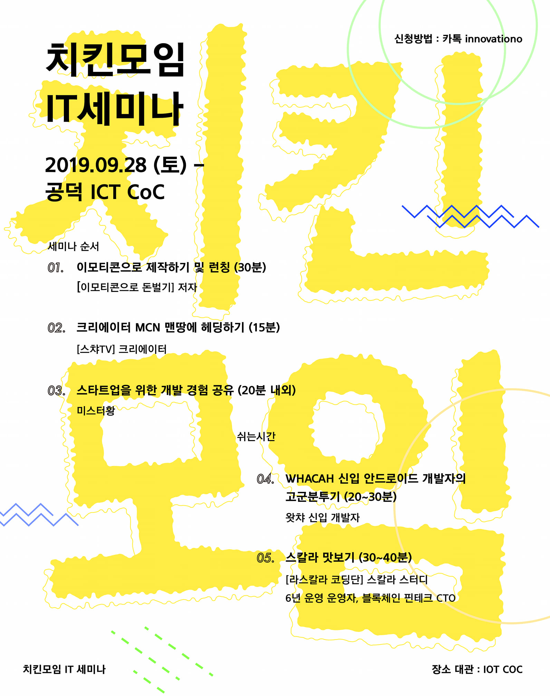

2019년 9월 치킨모임 후기
2019년 9월에 진행된 치킨모임에 대한 후기
치킨모임
치킨모임이란?
- “치킨으로 모인닭” 이라는 모토로 치킨을 좋아한는 사람들이 모이는곳인데, 꽤 오래 모임이 지속되었던것으로 알고있다. 나는 올해부터 모임에 참여를 하였는데 주로 개발자, 기획, 디자이너, 스타트업 대표, 사업준비자 외에도 다양한 직업군들을 가진분들이 모이는 곳이다.
치킨모임 순서
세미나
여태 치킨모임은 2번참여하였는데 역시나 이번에도 치킨을 먹기 전 세미나를 하였다. 이번세미나는 개발주제만이 아닌 다양한 주제로 세미나가 진행되었다. 이모티콘, 크리에이터, 스타트업 빌드업, 왓챠 신입개발자의 적응기 등 여러가지의 주제로 모임이 진행되었다. 마지막 모임에는 스칼라에 대해서 짧게나마 맛보기를 할수있는 시간이 있었는데 아쉽게도 시간이 조금 부족하여 스칼라 강의는 듯지못하였다. 그래도 이번에는 다양한 장르의 주제로 꽤 재미있는 시간을 가졌던것 같다.
이모티콘 제작하기 및 런칭 - <이모티콘으로 돈벌기> 저자
제일 재미있고 흥미있었던 세미나 주제였다. <이모티콘으로 돈벌기>의 저자이신 ‘김영삼’님 께서 오셔서 사이드잡이 될수도있는 이모티콘의 세계에 대햐여 재미있게 알려주는 시간이 있었다. 저자께서도 얼마전까지만 하더라도 전업 이모티콘 제작하시는 분이 아니였다고한다. 앱개발지이면서 UI UX 쪽에 일을 많이 하셨다는 것으로 기억을 하고있다. 무튼, 충분히 부업으로 이모티콘 시장에 진입할 수 있다는 것을 잘 알려주셨다. 그런데 그것이 말처러미 쉽게 되는것은 아니라는 것이었다. 특히 카카오쪽에는 이모티콘 심사가 하루에 2-300개씩 들어가는데 그중에 심사는 약 3-5% 내외로 심사가 이루어지는것 같다. 약 8-10명정도? 라고 들었던것 같다. 그만큼 이모티콘 시장이 핫다하는 중거이며 과열된것 같지만 그래도 활로가 있고 아직까지는 노다지에 광부가 달라붙듯 많은사람들이 먹을것이 있기에 너도나도 뛰어드는 시장으로 이해했다. 이모티콘 제작을 하며 수익냈던 실적사항도 공유해주셨고 생각보다 수입이 나쁘진 않은것으로 보였다. 그리고 역시나 이곳도 대박을 치는 사람은 연봉 2-30억은 우숩지않게 가져가는 곳이라는 것이다.
무튼, 핵심적인 이야기이며 원론적인 이야기를 해주셨는데.. 역시나 트랜드에 민감해야 한다는 것이다. 주로 이용층은 10-20대, 50대 2부류가 주 고객층으로 파악이 되는것같다. 물론 공감적인 능력으로 이미 이해하는 사람들도 있을것이다. 요즘 10-20대 특히 10대들의 감성은 약간의 ‘병맛감성’ 이라고 지칭한다. 그림도 못그리는 것 같지만 실력자가 의도하여 픽셀을 깨지게 그리고 병맛같은 컨텐츠, 그림체로 이모티콘 스토어를 휩쓸어가는 경우도 다반이다.
그러나 50대에 들어가면 또 이야기가 달라진다. 그들의 감성은 정교하고, 귀여운 감성(?), 약간의 촌스러운(보라, 빤짝이 등..) 이러한 감성이 주 강세를 이룬다는 것을 또 알게되었다. 실제로 사용자들이 쓰는 이모티콘을 보여주니 딱 알겠다는 느낌을 받게되었다.
그리고 마지막으로 이모티콘스토어의 시장이 넓다는것을 알게되었다.. 1부리그의 카카오톡을 제외한 2부리구 라인, 삼성이모티콘, 아이폰이모티콘 등.. 많은 이모티콘 시장이 있다는것도 알게되었다.
과연 내가 할 수 있는것이 있을까? 그렇지만 꼭 이모티콘이 아니더라도 내 스스로 수익을 창출할수 있는것이 있다면 언제든지 도전해보는 자세가 필요한것이 지금 내게 필요한 것인것 같다.
크리에이터 MCN 맨땅에 헤딩하기 -<스챠TV> 크리에이터
두번째 강연은 현역 크리에이터분이 오셔서 강연을 해주셨다. 나이는 나와 비슷한 또래같았고 느낀 감정은 행동력이 빠르다는 것이었다. 본인이 생각하고 조금의 확신이 생긴다면 일을 추진하는 능력 아주 높게 생각이 들었다.
먼저 스챠님은 디퓨져 구독(개인사업)을 하기위해 작년 2018년 부산에서 서울로 혼자 상경을 하셨다. 그리고 영업을 하면서 성과를 이루어내기도 하고 거절도 당하면서 많은일을 겪었고 특히 거절을 많이 당하다보니 본인의 자존감이 많이 내려갔었다고 한다. 그리고 난 후 주변의 권유를 받아 특징과 본인의 특기를 잘 살려 유튜브 크리에이터에 도전을 하기 시작했다고 한다.
스챠TV라는 채널을 만들어 채널을 유지해갔는데 리뷰, 외국인친구 먹방, 길거리인터뷰 등 이것저것 컨텐츠를 이어가며 진행을 하게되었다. 그렇지만 성과는 노력대비 많이 창출되는 것 같지가 않았고 본인이 아니다 싶어 깔끔하게 끝을 냈다고 한다. 총 구독자수는 500명이 조금 넘었던것 같았다.
그리고 중간에 잠깐 중국관련 사업(?) 기억이 잘 안나는데 그런시기를 보내며 활로를 찾은것이 ‘틱톡’ 플랫폼이었다. 틱톡을 통해서 본인의 재능과 컨셉을 찾게되었고 영상은 순싯간에 200만뷰? 이상을 찍게되었고 그 후에도 컨셉이 잘 맞는지 늘어나는 팔로워 등 진행이 잘 되는것 같았다. 근데 대단하게 느낀것은 거기서 끝낸것이 아니라 ‘인큐베이터 사업’ 을 진행하게 된것이다. 틱톡쪽과 협의하여 공식어쩌고..(명칭이 기억이안남)을 따내려고 협의에 들어가게 되었고 틱톡을 통하여 ‘아프리카, 트위치, 유튜브, 인스타그램.. 등’ 여러가자의 플랫폼과 연관지어 크게 발전하게되는 이야기를 들려주었다.
이분에게 느낀것이 있다면 ‘확신’ 과 ‘추친력’ 이 아닐까 생각이 들었다. 어느 책이서 보게되었다. 70%의 확신이 있으면 추진하라는 말을 미국 해병대에서는 70%의 룰이 있다고 한다. 80% 90%의 확신이 들어 실행하기까지 기다리기보단 70%의 확신과 상황이 주어졌을때 실행하라는 말이 있다. 마치 기회가 있을때 잡으라는 말과 같은 맥락인것 같다. 무튼, 이분의 스챠님의 도전정신에 있어서 많은 도전을 받게되는 시간을 가지게 된것 같다. 늘 두려워서 도전하지 못하는것들에 있어 조금은 실행에 옮길수있는 것들을 싱행해보는 것이 좋지 않을까?
스타트업을 위한 개발 경험 공유 - 미스터황
스터트업에 관한 좋은 말씀을 많이 해주셨다. 이 강연은 스타트업을 준비하는 입장에서 들었으면 뼈가되고 살이되는 말씀들이 많은것 같았다. 실패하였던 경험들을 나누어주셨고 팀원들을 꾸릴때에 있어 본인의 노하우를 말씀해주시기도 하셨다. 스타트업 전문으로 개발하시는 개발자여서 생소하지만 주변에서 듣기 어려운 이야기도 많이해주시고 대기업환경과 스타트업환경의 차이점에 대해서도 말씀해주셨다.
가장기억에 남는 에피소드는 스타트업에 개발하는 어느 CTO께서 서버를 11대를 돌려 개발을 하셨다는 이야기를 듣게되었다. 서버를 쪼개고 또 쪼개어 운영을 하고있던 것이었다. 물론 요즘 서비스되고있는 대기업 프로젝트에서는 당연하게 구축되는 아키텍쳐이고 MSA화를 많이 하는 편이다. 그러나 이것이 스타트업에 들어오면 이야기가 달라지는 것이다. 일단 스타트업은 돈이없고, 쪼갤만한 트래픽도 없기 때문이다. 그외에 다양한 조건들이 있는데 스타트업을 이하하지 못하면 이러한 상황도 생길 수 있다는 것이다. 그리고 서버를 줄이고 다시 구축하는것도 시간과 돈이 더 들기때문에 그냥 진행해야한다고 말씀해주셨다. 이처럼 스타트업에 관심이 있다면 관점또한 바뀌어야 하는 것이다. 스타트업에 관심이 더 많았더라면 쫓아가서 배우고싶은 것들이 많았던 시간이었다.
WHACHA 신입 안드로이드 개발자의 고군 분투기 - 왓챠 신입 개발자 (이기정 feat.지미)
만 20세의 어린나이로 개발을 즐거워하고 연구해 적용하는 능력이 뛰어나보이는 친구가 있다. 지난번 모임에서는 전직장 ‘바비톡’ 에 있을때 CI/CD (배포 빌드 자동화)에 대해 직접 설계하고 구축하여 사용했던것을 발표하였는데 이번에는 이직 후 회사에서 그간 있었던 에피소드와 고분분투하고 있는 이야기를 전해주었다.
물론 회사생활이 다 궁굼한건 아니였지만 (-_-;) 그중에 기억남고 기록하고싶은 이야기가 있다면 본인이 왓챠플레이를 사용하면서 불편하고 고치고싶었던 점에 대해 연구하고 직접 수정하고 배포했던 경험담이 아직 기억에 남는다. 어떤 내용을 수정하고 배포하였는지는 기억이 잘 안나지만 스스로 그 부분에 대해 연구하고 배포까지의 과정이 멋지게 보였다. 결론적으로는 버그가 있는 배포를 하게되었지만 재분석하고 같은실수를 하지 않으려는 모습에 박수를 보내고싶었다. 그리고 회사 사내 스터디를 하며 공부하고 회사 기술블로그에 올릴정도로 연구하고 발표하는 모습도 멋지게 보였다. 무튼 앞으로 기대가 되는 친구이며 어떤 발전을 해나갈지 궁금하다.
스칼라 맛보기 - <라스칼라 코딩단> 스칼라 스터디 6년 운영 운영자, 블록체인 핀테크 CTO
아쉽게도 시간이 없어 이 강연은 듣지 못하게되었다. 다음번 모임때 진행을 하게 될 것같은데 그때에 한번 꼭 참여해보는 것으로 기약해야겠다. ㅎㅎ
치킨교류
치킨교류는 만끽치킨으로 이동하여 치킨모임을 진행했다. 우리테이블에는 7년차된 CEO분이 한분 계셨고, 4년차된 웹/서버 개발자, 사업을 준비중이신분, 2년차 웹/서버 개발자인 나를 포함해 4명이서 치킨을 먹으며 이야기를 나누었다. 서로가 지내왔던 환경과 앞으로 꿈꾸고있는 모습들, 또 토이프로젝트나 재미있는 에피소드를 나누며 재미있는 시간을 보냈다. 또 옆 테이블에서는 IOS로 영화필터를 담은 카메라 어플리케이션을 개발하신분도 계셨고 그 어플리케이션을 만들게된 에피소드를 듣게되었다. 패스트캠퍼스의 프로덕트 매니저분도 계셨다. 이분은 지난번 모임때 이야기를 많이 나누었는데 이번에는 아쉽게도 이야기를 나눌 시간이 없어서 아쉽게 지나갔다.
또 잠시나마 교류를 하게된 분은 ‘MY MUSIC TASTE’ 의 프로덕트 매니저분이 셨다. 이번에 처음 알게된 회사였는데 공연기획하는 회사였다. 그러나 실제 공연의 수요자들이 공연 역추진을 하는 구조로서 ‘MY NUSIC TASTE’ 의 플랫폼으로서 전세계의 공연 제안을 하고 조건에 충당이 되면 공연을 중개 기획해주는 플랫폼이었다. 급성장 하게되어 직원들을 많이 뽑게되었고 앞으로 60여명의 직원들을 더 뽑을 예정이라고 한다. 서버는 파이썬을 쓴다고하는것 같고 개발자도 많이 채용하니 지원을 관심이 있는사람이 있다면 지원을 해보는것도 좋은 것 같다.
치킨교류가 좋은점이 있다면 치킨을 먹으면서 많은 사람들과 교류를 하고 재밌는 이야기를 나누고 좋은 동료를 얻게 되는것 같다. 즐거운 시간이었고 또 모임이 추진된다면 와서 나쁠것은 없는것 같다.
티타임
마지막 인원이 얼마남지않아 8명의 적은 인원으로 티타임을 하러 가게되었다. 공덕역쪽 정말 이쁜 카페를 발견하게 되었다. ‘커피향 짙은 그 한옥’ 이라는 카페를 발견했는데 분위기도 좋고 음료맛도 좋았다. 여기는 다음에 데이트장소로도 정말 좋아보인다. 집에와서 아내에게 이런카페가 있다고 했더니 나보고 배신이라면서 꼭 데려가라고 한다. 무튼 티타임까지 마치고 집까지 안전하게 도착.
결론
모든 사람들과 친해지고 신뢰를 쌓으며 좋은관계를 유지하기는 어렵다. 그렇지만 이 모임을 통해 다양한 사람들과 소통하고 나눔의 즐거움을 다시한번 느끼게 된다. 회사를 다니고 일에 치이며 사람들과의 소통이 부족함을 느끼게 될때도 있다. 그렇지만 이 모임을 통해 배우고 도전하고 기쁨을 나누게 되는 시간이 즐거웠다. 그리고 다녀오면 조금은 인생에 대한 도전이 되고 시야가 넓어지는 경우가 있어 당분간은 버프를 받아 열심히 살아봐야겠다.. ㅋ